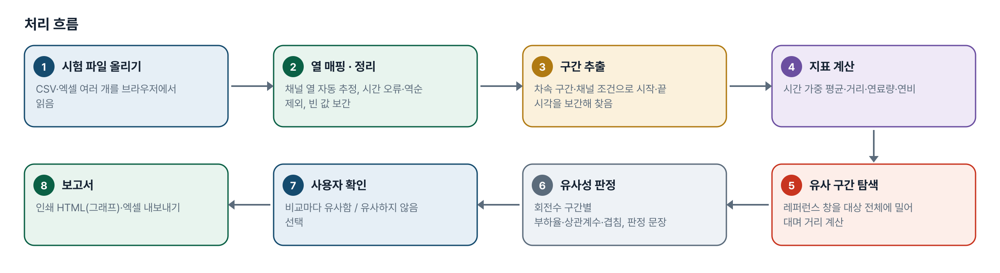
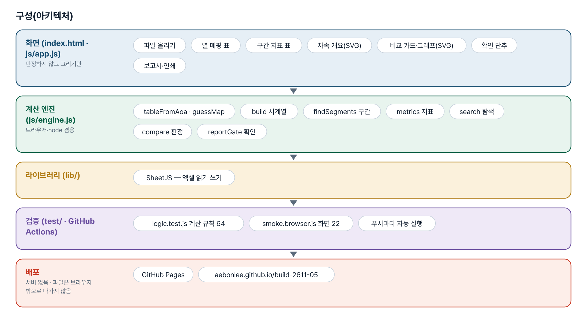
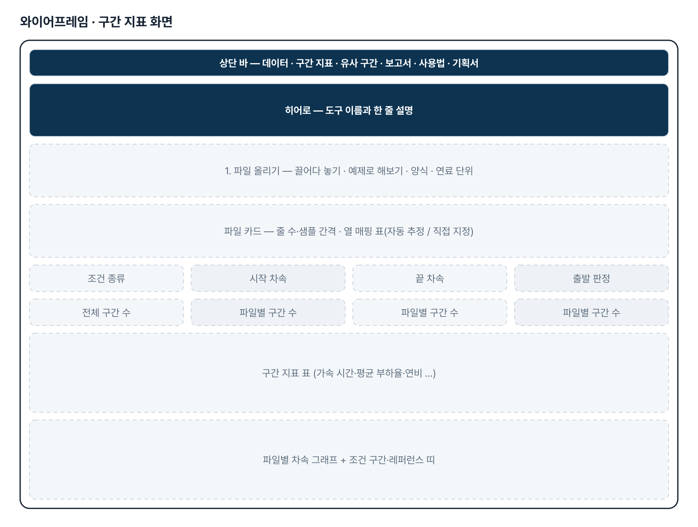
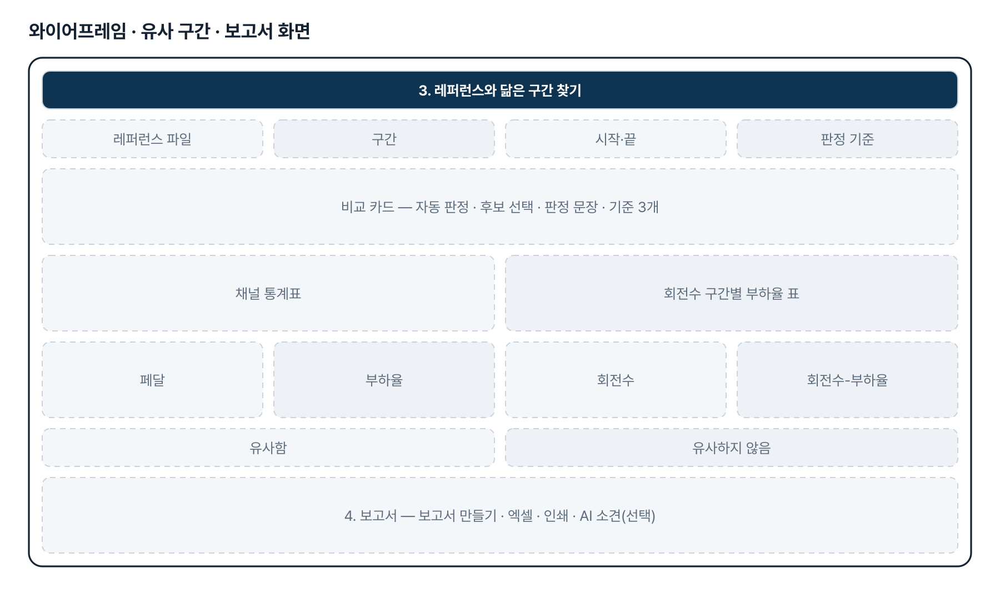
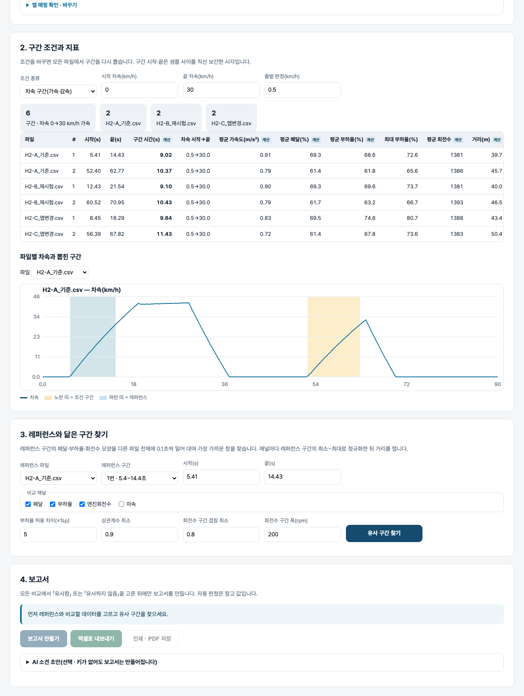

기획서 내려받기
파이프라인 · 아키텍처 · 와이어프레임 · 개발일지가 들어간 워드 문서입니다. 버전마다 따로 남깁니다.
| 버전 | 날짜 | 바뀐 점 | 파일 |
|---|---|---|---|
| v1.0 | 2026-11-02 | 첫 판 — 열 매핑·구간 지표·유사 구간 탐색·유사성 판정·사용자 확인·보고서(인쇄·엑셀) / 기획서 워드 판·파이프라인·아키텍처·와이어프레임 추가 | 워드 내려받기 |
요구사항과 구현
| 기획서 요구 | 구현 |
|---|---|
| 시험 raw data 기반 분석 | CSV(UTF-8·EUC-KR)·엑셀 첫 시트, 제목 줄·단위 줄 자동 처리, 여러 파일 동시 |
| 페달·부하율·회전수 등 판별 | 열 매핑 표(자동 추정 / 직접 지정 표시), 한글·영문 약어 별칭 |
| 사용자 지정 criteria | 차속 구간(가속·감속, 출발 판정 차속) · 채널 조건 지속(예: 페달 ≥60% 1초 이상) |
| 0→30kph 가속 시간·평균 부하율·연비 동시 계산 | 구간 시간·평균 가속도·평균/최대 페달·부하율·회전수·거리·연료량·연비(시간 가중, 끝점 보간) |
| 레퍼런스 1개 지정 → 유사 구간 추출 | 0.1초 격자로 다시 표본화, 레퍼런스 범위 정규화 후 슬라이딩 창 거리, 겹치지 않는 후보 3개 |
| 유사성 지표(「xx% 이내 수렴」) | 회전수 구간별 부하율 차이(평균·최대)·허용 이내 비율·상관계수 최소·구간 겹침 → 판정 문장 |
| 보고서 전 사용자 확인 | 비교마다 「유사함 / 유사하지 않음」을 골라야 보고서 버튼이 열림, 자동 판정과 다르면 표시 |
| 그래프 포함 보고서 | 화면 보고서(인쇄·PDF), 엑셀(구간지표·유사도판정·회전수구간_부하율·정렬 데이터) |
그림으로 보기





개발일지
2026-11-13 · 마무리 — 로그인 · 게시판 · 첫 화면(판 2026-11-13.1)
- 과정 마무리 묶음을 붙임(마산 2차수 과제와 같은 키트) — 로그인 전 첫 화면(사진 3장 · 기능 · 사용 순서 · 기획서), 회원가입 → 사용 신청 → 관리자 승인, 게시판 · 새 글 알림, 내 정보, 관리(구성원 승인 · 첫 화면 모양)
- Supabase 표 · 함수 · 정책은 전부 build261105_ 로 시작(auth.sql · board.sql · site.sql). 과정용 프로젝트에 적용했고, supabase/README.md 순서대로 본인 프로젝트로 옮길 수 있음
- 도구의 계산 · 판정 · 저장 방식은 그대로(업무 자료는 지금처럼 브라우저 안에서만 처리). 기획서 · 사용법 쪽은 로그인 없이 읽음
- 내 PC(파일로 열기 · localhost)에서는 로그인을 건너뜀 — 주소 끝에 ?auth=1 을 붙이면 로그인 화면을 볼 수 있음
2026-11-02 · 첫 판
- 패들릿 build02 Hyunwoo Park 기획1을 작업 지시서(CLAUDE.md)로 옮기고 구현
- 계산 엔진 engine.js — 읽기·열 매핑·구간·지표·탐색·판정·확인 조건·가짜 예제 3개
- 화면 — 매핑 표·지표 표·차속 그래프·비교 카드·확인·보고서·엑셀·AI 소견(선택)
- CI(우분투)에서 360px 넘침 — 후보 선택 상자를 칸 안으로 줄이고 넓은 글꼴 검사 추가
- 계산 테스트 64 · 화면 테스트 22 통과, GitHub Actions 통과